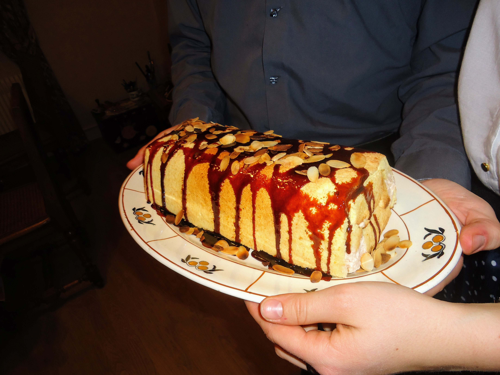

Bûche à la poire

Pour huit personnes :
- 4 œufs
- 115g de sucre
- 120g de farine
- 25g d'amandes effilées
- Trois poires bien mûres
- De la mousse de poires (disons assez pour presque remplir un moule à cake)
- De quoi décorer (voir par exemple la recette de nappage chocolat)
- Séparer les jaunes des blancs d'œuf et faire monter les blancs en neige ferme avec une pincée de sel.
- Mélanger les jaunes avec le sucre jusqu'à ce que la couleur devienne jaune pâle et non jaune vif. Incorporer la farine petit à petit pour obtenir une pâte compacte (vers la fin, ça fait une boule).
- Préchauffer le four à 180°C. Ajouter les blancs par petites quantités, en remuant bien, pour aérer la pâte et lui faire prendre une consistance un peu crémeuse. Saupoudrer d'amandes effilées un peu partout.
- Recouvrir une plaque de papier sulfurisé, beurrer un peu partout, et étaler la pâte dessus pour former un grand rectangle pas trop épais. Enfourner dix grosses minutes - il faut que des bulles se forment à la surface, mais il ne faut pas que ça brunisse.
- Laisser refroidir le biscuit, l'enlever de la plaque, puis en disposer une partie en demi-cylindre au fond d'un moule à cake. Couper les bords.
- Utiliser quelques chutes pour « fermer » le cylindre aux extrémités, puis mettre une grosse couche de mousse dedans. Ajouter les poires coupées en lamelles sur le dessus (on peut aussi les avoir fait caraméliser au préalable), puis mettre une couche de biscuit, puis encore de la mousse et des poires, et garder suffisamment de biscuit pour pouvoir en mettre sur le dessus du moule (ce qui va plus tard devenir la base de la bûche).
- Mettre ça au congélateur pendant deux bonnes heures, puis au réfrigérateur. Démouler (en théorie, disons statistiquement avec un échantillon de 1, ça doit venir tout seul), napper, et servir frais immédiatement.
Remarque : évidemment, on peut adapter la recette comme on veut, par exemple en remplaçant la mousse de poires par de la mousse au chocolat, les poires par un autre types de fruit, les amandes effilées par des noisettes concassées, et en improvisant des décorations cool.